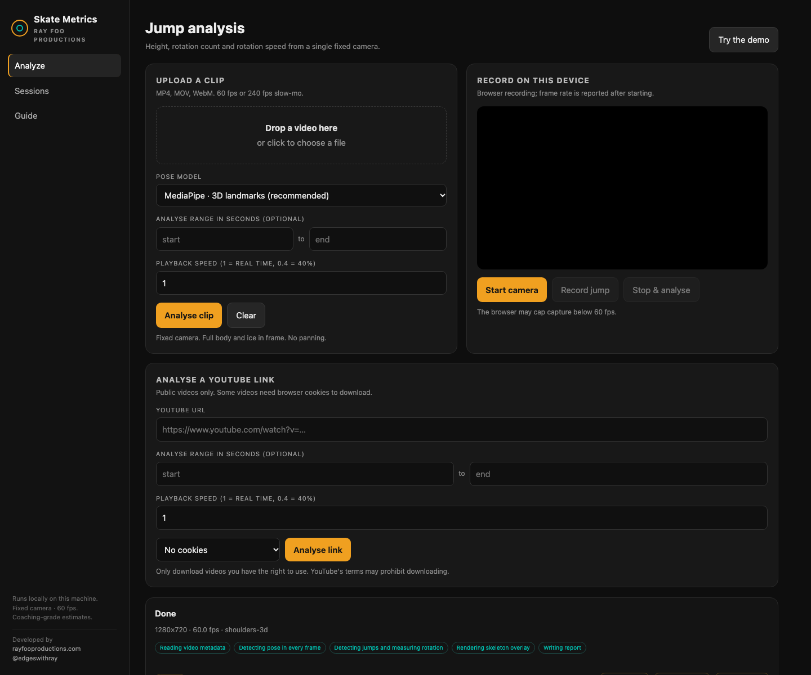

Skate Metrics
Ray Foo ProductionsMarkerless figure-skating jump analysis from one phone video.
Jump height, rotation count and rotation speed — with a skeleton overlay, a clean skeleton-only view and a coach-readable report. Built for a fixed 60 fps camera at the boards.

Height
Derived from flight time: h = g·t²/8. No camera calibration needed.
Rotation
3D shoulder yaw, unwrapped across the jump. Shown in revolutions: 0.5 = half, 1.5 = single Axel, 4.5 = quad Axel.
Skeleton output
An overlay video and a clean skeleton-only render, both H.264 for browser playback.
Local-first
FastAPI + MediaPipe + OpenCV. Upload, browser recording or a YouTube link. Jobs persist under out/web/.
Run it locally
git clone https://github.com/rayfoolshs/skate-metrics.git
cd skate-metrics
uv sync --extra dev --extra pose --extra web
uv run skate-metrics serve
# open http://127.0.0.1:8000Requires Python 3.11–3.13, uv and ffmpeg. The MediaPipe model downloads on first analysis.
Docs
The demo on this page is synthetic, with a known 0.60 s flight and 1.5 revolutions, so you can see the output without uploading a clip.